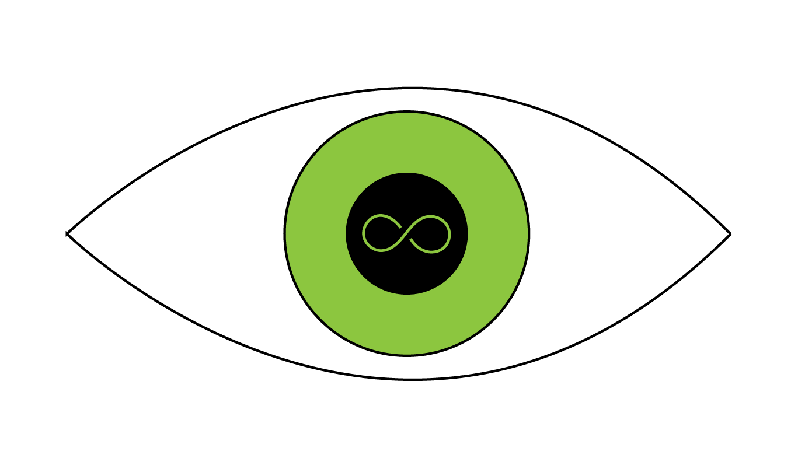

<aside class="off-canvas position-right" id="right-off-canvas" data-off-canvas data-position="right">
  <ul class="vertical menu" data-drilldown>
     
    <li><a class="float-center">
      <i class="fa fa-gears fa-2x"></i>
    </a></li>
    <router-outlet name="settings"></router-outlet>
  </ul>
</aside>

